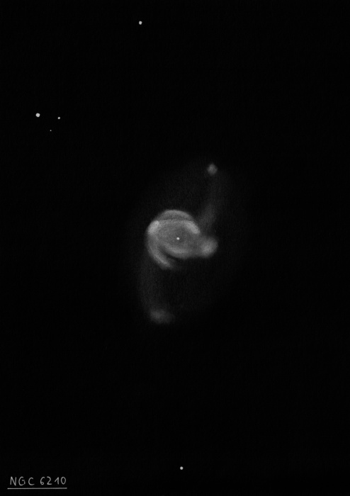

NGC 4945, the Tweezers Galaxy
- Name: NGC 4945 = ESO 219-024 = LGG 344-001 = PGC 45279
- RA: 13h 05m 27.5s
- Dec: -49° 28' 06" (2000)
- Constellation: Centaurus
- Type: SBcd; Sy2; ULIRG
- Size: 20'x4'
- Position angle: 43° (SW-NE)
- Magnitude: 8.6V
- Surf Br: 13.2 mag/arcmin²
NGC 4945 is the second brightest member of the Centaurus A (NGC 5128) group and lies at a distance of only 11-12 million light years. You might not have heard of it though as it scrapes the horizon (or below) if you live much north of +30° latitude. Certainly an object worthy of any list if you head further south on an observing trip in the future.
James Dunlop discovered this galaxy on 29 Apr 1826 from his backyard observatory in Parramatta, New South Wales (now a suburb of Sydney) with his homemade 9-inch f/12 speculum reflector. This is actually the first galaxy he discovered - on his second night searching for nebulae - along with Centaurus A = NGC 5128! His description reads
"a beautiful long nebula, about 10' long, and 2' broad, forming an angle with the meridian, about 30 [degrees] south preceding and north following; the brightest and broadest part is rather nearer the south preceding extremity than the centre, and it gradually diminishes in breadth and brightness towards the extremities, but the breadth is much better defined than the length. A small star near the north, and a smaller star near the south extremity, but neither of them is involved in the nebula. I have strong suspicions that the nebula is resolvable into stars, with very slight compression towards the centre. I have no doubt but it is resolvable. I can see the stars, they are merely points. This is north following the first zeta Centauri."
The unusual nickname, the "Tweezers Galaxy" is from its photographic appearance with two linear streaks along the border - though this depends on which photograph you're looking at!

NGC 4945 contains one the nearest AGNs, along with NGC 253 and M82, and apparently a bright starburst. It displays unusually strong infrared emission and radio properties that support starburst activity in the nucleus, but X-ray observations favor a Seyfert-powered nucleus. It also hosts a supermassive 1-2 million solar mass black hole.
My first view was back in 2002, just outside of Sydney through a 12-inch, and most recently a year ago from Tasmania and Coonabarabran in 10x30 IS binoculars and a 25-inch dob. In the same binoculars, it was easily seen as a large, elongated glow just 18' east of 4.8-magnitude Xi 1 Centauri.
More observations...
In 2004 from Costa Rica in a 13.1-inch that I brought along as luggage:
Beautiful, huge edge-on spiral oriented SW-NE. At 166x, it appears ~15' x 2' with tapering tips that fade out towards the ends of the extensions. There is only a broad concentration with a gently bulging core, although the surface brightness is somewhat irregular or mottled due to dust. The galaxy fades a bit to the southwest of the core and then brightens slightly further southwest. The northeast extension seems a bit splotchy or mottled.
and in 2008, again from Australia in a 24-inch f/3.7:
Remarkable spiral at 200x, extending southwest to northeast across 2/3 of the 30' field. I didn't take detailed notes on this observation but there was just a broad concentration with no well defined core region. The galaxy is very slightly wider through the center and only tapers towards the tips. Along the south edge, just southwest of center, is a brighter linear streak forming a sharp edge (the dust lane is just beyond). The main body of the galaxy fades a bit in this area and then brightens again further southwest. The major axis appears slightly warped or bent towards the north near the northeast tip, due to a large dust patch that bites a notch into the galaxy. On the south side of the northeast end, some very faint haze is visible.
For a good laugh, I should mention that NGC 4945 has its own techno-funk song with the chorus...
She must be from NGC 4945
She can't be from this galaxy
She just like nothin' I've seen before on this planet
She from NGC 4945, or a similar galaxy; maybe Messier 83?
And I want her to take me home
As always,
"Give it a go and let us know!
Good luck and great viewing!"